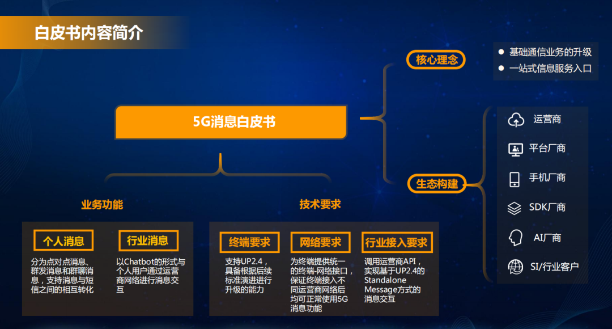
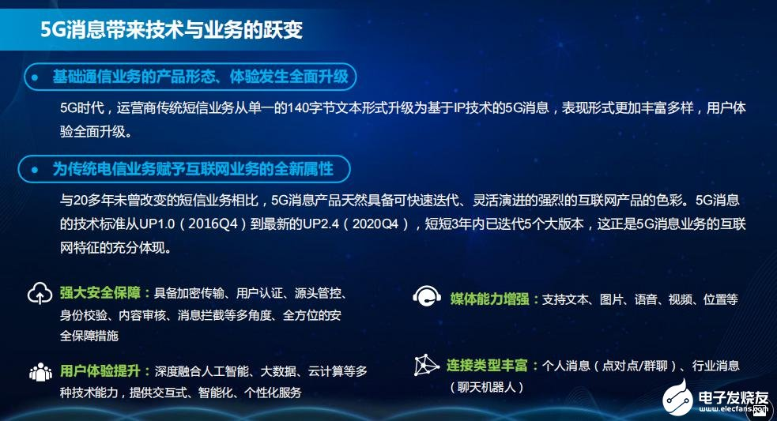
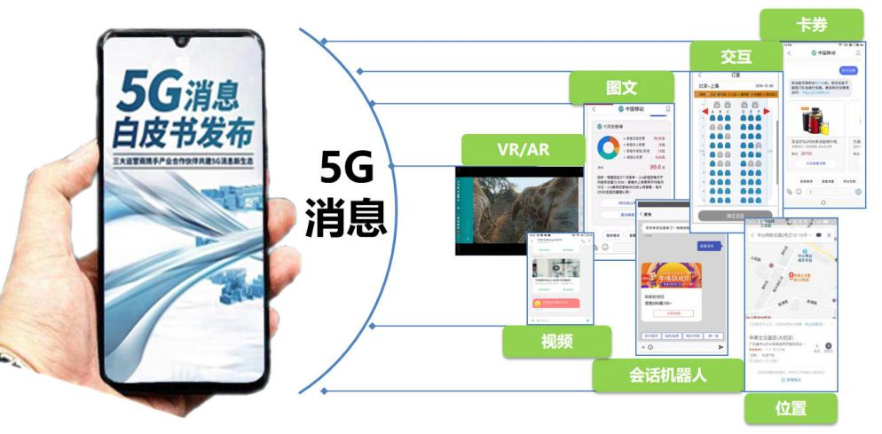
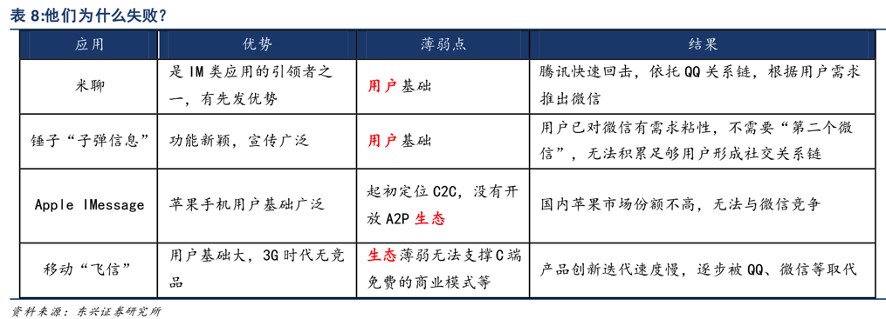
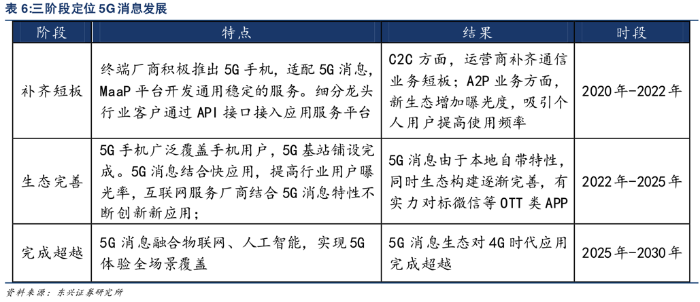

5G消息概述
5G消息=RCS消息- 如何理解？
- RCS消息= （个人对个人的）微信 + （个人对企业的）小程序（/公众号/独立app）
- 源自前不久国内发布的
- 《5G消息白皮书》
- 三大运营商：5G消息业务还处于试点大区联调测试阶段
- 2020年4月8号，联合发布《5G消息白皮书》，推出
5G消息业务 - 11家终端厂商：中兴、华为、小米、OPPO等，积极表态予以全力支持
- 根据业内消息，2020年6月份国内就可以推出5G消息的正式商用
- 国内手机的升级支持，估计需要3个月到1年的时间
- 2020年4月8号，联合发布《5G消息白皮书》，推出
- 发布仪式
- 内容简介
- 
- 三大运营商：5G消息业务还处于试点大区联调测试阶段
- 《5G消息白皮书》
- 应用特点
- 
- 支持应用类型
- 
- 不同网络支持情况
3G/4G：可选5G：强制=必须
5G消息技术实现- ==
RCS技术RCS技术：底层核心依赖的是IMS技术（架构）
- ==
- 如何理解？
为何推出5G消息
- 概述
- 现状：互联网发展的这些年，钱 都被 互联网厂商 赚了
- （移动 网络）运营商 被
管道化，没赚到钱管道化：运营商 成为 互联网厂商 和 用户 之间的 数据传输管道
- （移动 网络）运营商 被
- 目标：运营商希望能赚到用户的钱
- 现状：互联网发展的这些年，钱 都被 互联网厂商 赚了
- 细节
- 相关历史
- 
- 5G消息的目标
- 
- 5G消息的现状
- 相关历史